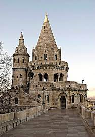
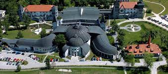
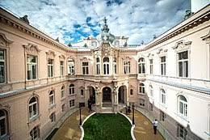

Kispest
The Place of interested
There is so much to see in Budapest, that's why I love this city, it's full of history. Budapest has a lot of schools, a lot of sports teams, so it spreads the fans out.
Fisherman's Bastion
The fishing rampart is very popular with tourists, and the view from the rampart is very beautiful. I really like to go up to the bastion, I go up at least once every year, it's tiring but worth it for the view. Up in the bastion you can find restaurants, small stalls, you can also go up to the lookout.
Transport with the BKK
If you want to travel within Budapest, here's the BKK (Budapest Transport Centre), you can even get to the suburbs if you're not just interested in the city centre. Sometimes it's not so pleasant to travel with BKK, but overall BKK is good.
with Metro
No1 Metro
Metro 1 runs between Mexikói út and Vörösmarty tér, along stops such as Deák Ferenc tér and Hősök tere.
No2 Metro
The metro 2 runs between Déli pályaudvar and Örs vezér tere, along stops such as Deák Ferenc tér or Puskás Ferenc Stadion.
No3 Metro
The metro 3 runs between Kőbánya-Kispest and Újpest-Központ tere, along stops such as Deák Ferenc tér and Nyugati pályaudvar.

No4 Metro
Metro 4 runs between Keleti railway station and Kelenföld railway station, along stops such as Kálvin tér and Pope John Paul II Square.
With Tram
There are many trams within Budapest, my favourites are trams 4, 6, 1 and 50. Trams 4 and 6 run in the city centre and go through to Buda, and tram 1 goes from Buda to Pest and back to Buda. Tram 50 runs in Kispest.
With Bus
There are buses within Budapest, my favourites are buses 100E, 99, 136 and 50. Bus 100E and 99 run in the city centre and go through to suburbs, and bus 93 goes from Kispest to Pestszentlőrinc. Bus 136 runs in from Kispest.

From Ferenc Liszt Airport
How to get from the flying square all the way to:
To Heroes Square
How to get from the flying square all the way to the Parliament; Take the 100E to Deák Frenc tér, then metro line 1 to Heroes Square.
To Fisherman's Bastion
How to get from the flying square all the way to the Parliament; Take the 100E to Deák Frenc tér, then take the 16 bus to Szentháromság tér, and from there it's a 2 minute walk to the Fisherman's Bastion.
To Museum of National
How to get from the flying square all the way to the Parliament; You take the 100E to Kálvin Square, then you walk 2 minutes to the National Museum.
To Hungarian Parliament Building
How to get from the flying square all the way to the Parliament; Take the 100E to Astoria, then metro 2 to Kossuth Lajos Square, from where you can stand in front of the Parliament in 2 minutes.
If you want to live in Budapest
The best way to live in Budapest as a foreign national is to come here as a successful person. On average, they can charge 60 million for a 50-60 sqm apartment, with the exception that if you come here to study, you can live back in the local dormitory for free (or for a minimal cost (20-30 thousand HUF plus utilities)).
You can attend these university
BME
The Budapest University of Technology and Economics (BME or Műegyetem) is one of the most prestigious technical universities in Central Europe and Hungary, and the world's first technical university (or more precisely, the first institution to offer engineering education in a university structure), founded in 1782. In the 1990s, the BME started teaching new disciplines, with the establishment of the Faculty of Economic and Social Sciences and the Faculty of Natural Sciences in 1998. Today, with eight faculties and more than 24 000 students, it is one of the largest universities in Hungary. The eastern façade Building K According to HVG's 2022 ranking of higher education, BME is the 3rd best university in Hungary.

ELTE
Eötvös Loránd University (abbreviated ELTE, Latin: Universitas Budapestinensis de Rolando Eötvös nominata) is Hungary's longest continuously operating university and one of the country's largest and most prestigious higher education institutions. Founded by Péter Pázmány, Archbishop of Esztergom in 1635 in Nagyszombat, the four-faculty university was moved to Buda by Queen Maria Theresia in 1777 after the dissolution of the Jesuit order, and to Pest in 1784, during the reign of Joseph II. The former faculty of theology became the Péter Pázmány Catholic University, and the former faculty of medicine the Semmelweis University. It was initially called the Jesuit University of Nagyszombat, from 1769 the Royal Hungarian University, after another transfer it became the Royal University of Pest, from 1873 to 1921 the University of Budapest, from 1921 the Royal Hungarian University of Pázmány Péter Tudományegyetem; it has borne the name of the physicist and politician Loránd Eötvös since 15 September 1950. It currently has nine faculties and about 28,000 students in Budapest, Szombathely and Nyíregyháza. According to HVG's 2021 ranking of higher education, ELTE is the best university in Hungary.

Péter Pázmány Catholic University
The Pázmány Péter Catholic University (PPKE or "Pázmány") is a state-recognised ecclesiastical university. The Faculty of Law and Political Sciences, the Faculty of Information Technology and Bionics, the Faculty of Humanities and Social Sciences and the Faculty of Theology are located in Budapest, while the Vitéz János Teacher Training Centre is located in Esztergom. Founded in 1635 by Cardinal Péter Pázmány in Nagyszombat, it is the successor of the Faculty of Theology of the University of Nagyszombat (now Eötvös Loránd University) and, from 1950, of the Roman Catholic Academy of Theology, which is why it is considered to have been founded in 1635. The Faculty of Humanities, founded in 1992, was recognised by the Hungarian state in 1993, thus legally enabling the creation of a university with the right to award degrees traditionally retained by the Faculty of Religious Studies. In 1999, the university became a university of the Holy See (cf. Ex corde Ecclesiae).
Gáspár Károli Reformed University
The Károli Gáspár Reformed University (KRE or "Károli") is one of the Reformed higher education institutions in Hungary, which offers courses in the humanities, health sciences, economics, theology, law, education and social sciences. Although the university itself was founded under this name in 1993, its predecessor, the Pesti Theological Academy (after the city was unified in 1873, the Budapest Reformed Theological Academy), had existed since 1855. With the establishment of the University in 1993, the Reformed educational institutions that existed at that time and had been in existence since the 19th century were re-launched and united under the leadership of the later Károli Gáspár Reformed University. The University currently offers courses in Budapest, Nagykőrös and Kecskemét in various disciplines. According to HVG's 2021 ranking of higher education, Károli is the 4th best university in Hungary. It is ranked 2nd in terms of the excellence of its teaching staff and 1st in terms of the percentage of academic degree holders.
